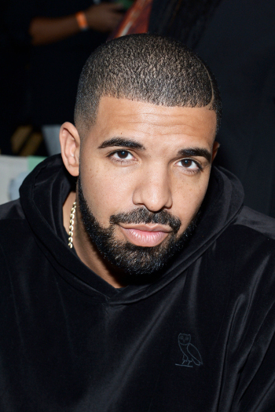
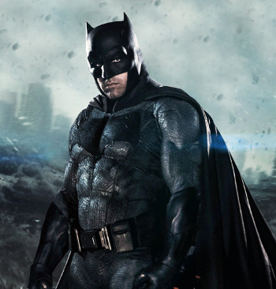

| Felipe Wayne | |
|---|---|
|
Felipe Wayne como universitário da UFFS |
|
| Informação Geral | |
| Nome Completo | Felipe Augusto Wayne |
| Também Conhecido como | Felipe; Wayne; Drake; Batman |
| Nascimento | 12 de Fevereiro de 1994 (23 anos) |
| Local de Nascimento | Gotham City |
| Ocupações |
|
| Outras Imagens | |
|

Felipe Wayne como Drake no festival Cisco Ottawa Bluefest |
|
|

Felipe Wayne como vigilante mascarado (Batman) |
|
Felipe Augusto, conhecido também como Wayne ou Drake (Gotham City, 12 de Fevereiro de 1994), é um universitario da UFFS (Universidade Federal da Fronteira Sul) que combate o crime durante a noite, e realiza shows de rapper.
Para combater os criminosos na madrugada, geralmente veste um traje cinzento. Usa uma máscara com orelhas pontudas e apenas a boca visível. Seus olhos são castanhos e usa um cinto de utilidades dourado. Usa também uma capa que antigamente era azul, mas com o passar do tempo, ficou mais comum que fosse preta, assim como suas luvas e botas, a capa com bordas em formato de asas de morcego é azul.
Quando tinha 17 anos, estreou como ator na série televisiva Degrassi: The Next Generation como Drake. Participando de 138 episódios da série. Após lançar algumas mixtapes entre 2006 e 2009. Drake assinou contrato com a gravadora Young Money, do rapper Lil Wayne. Em 15 de setembro de 2009, foi lançado So Far Gone, um EP de sete faixas em que cinco das faixas eram da mixtape original. O EP estreou-se no número 6 na Billboard 200 . Desde então, foi certificado ouro pela RIAA com mais de 500.000 cópias vendidas nos Estados Unidos. Em 18 de abril de 2010, o álbum ganhou Gravação de Rap do Ano no Juno Awards desse mesmo ano.